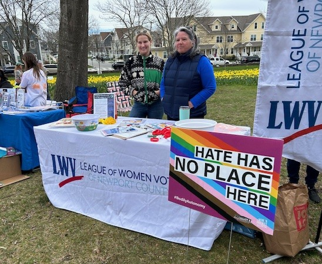

Calendar & Events
Join us for voter registration drives, candidate forums, educational programs, and community gatherings across Newport County.
All the key dates, the full candidate forum schedule, and who's running — in one place.
Upcoming Events
For upcoming League events, see the 2026 Candidate Forums schedule below and the Elections 2026 hub.
Regular Programs
Quarterly Member Meetings
Announced in advance • 5:30 PM
Regular gatherings for members and the public to discuss current issues and plan activities. Locations rotate around the areas in Newport County.
Board Meetings
First Wednesday • 1:00 PM
The Officers and Board of Directors meet to guide League activities. Members are welcome to observe these meetings.
2026 Candidate Forums
The League is hosting nonpartisan candidate forums across Newport County so voters can hear directly from candidates before the 2026 primary and general elections.
2026 forum schedule — times and locations announced as each forum is confirmed:
- State Senate Primary, District 13 — Aug 4
- Portsmouth — Town Council Sept 15, School Committee Oct 22
- Newport — School Committee Sept 17, City Council Sept 24
- Little Compton — Town Council Sept 22, School Committee Oct 19
- Middletown — Town Council Sept 29, School Committee Oct 21
- Tiverton — Town Council Oct 7, School Committee Oct 8
- Jamestown — School Committee Oct 15, Town Council Oct 19
See full details and add any forum to your calendar on the Elections 2026 hub →
Interested in helping? Forum teams handle candidate invitations, question development, timekeeping, and venue coordination. Contact us to volunteer →